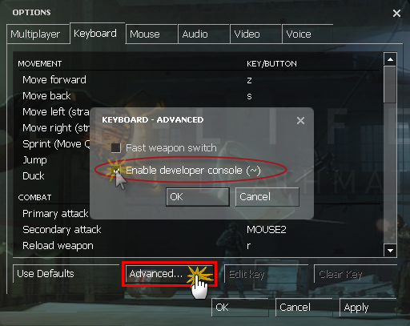
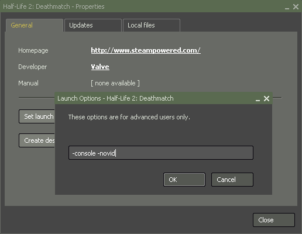

Allez dans "options" (ou "settings" selon la langue), allez dans l'onglet "clavier", cliquer sur "avancé..." puis cochez "activer console développeur ~", comme ceci :

Voila, normalement, vous devez avoir activer la console, et bien non !
Vous pourrez toujours tapez avec un marteau sur la touche "~", la console n'apparaîtras jamais.
Maintenant, je vais vous dire comment on fait pour réellement afficher cette console.
Quand vous avez cochez "activer console développeur ~", quitter le jeu, allez dans votre poste de travail > C: >Programs Files > Steam > SteamApps > SourceMods [ou votre pseudo (cela dépens du mod)] > [votre mod] > cfg.
Vous trouverez un fichier qui s'appelle "config", cliquez de droite dessus > ouvrir avec > Bloc-notes.
Cherchez cette ligne :
bind "9" "slot9"
bind "`" "toggleconsole"
bind "d" "+moveright"
Vous voyez la ligne du milieu ? Toggleconsole, c'est la console.
Et la lettre entre les guillemets, c'est la lettre qui l'active, vous pouvez alors mettre ce que vous voulez.
Une fois fois que vous avez mis la touche que vous voulez (moi je mets toujours la lettre "P", a vous de voir), enregistrez (ctrl+S ou Fichier > Enregistrer) puis fermez.
Relancer half life, appuyez sur la touche que vous aviez mis entre guillemets tout à l'heure, et là, la console apparaît comme par magie !!
Voila maintenant vous pouvez afficher la console
Il existe une autre méthode pour afficher la console si vous n'avez pas trop envi de toucher aux fichiers ".cfg".
Ouvrez Steam, dans l'onglet "Mes jeux". Faites un clic droit sur half life 2 Deathmach, et cliquez sur "propriétés".
Maintenant, cliquez sur "définir les options de lancement..."
Dans la nouvelle fenêtre qui s'affiche, taper "-console".

Maintenant, vous pouvez aller dans votre jeu, et la console est là, même si vous ne jouez pas.
Seulement il y a un hic, si vous fermez la console, vous n'aurez aucun moyen de la faire réapparaître, sauf quitter et redémarrer half life.
Dans ce cas vous pouvez utiliser un "bind", pour afficher la console avec la lettre "p" (par exemple), taper : bind "p" "toggleconsole" dans la console.
Ainsi quand vous presserez la touche "p", la console apparaîtra.
Tutoriel créé par BjO du Site Du Zero
Source: http://www.siteduzero.com/tutoriel-3-31154-afficher-la-console-dans-un-mod-source.html